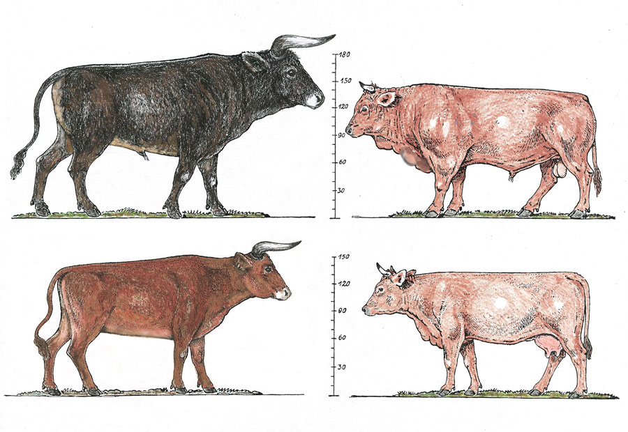
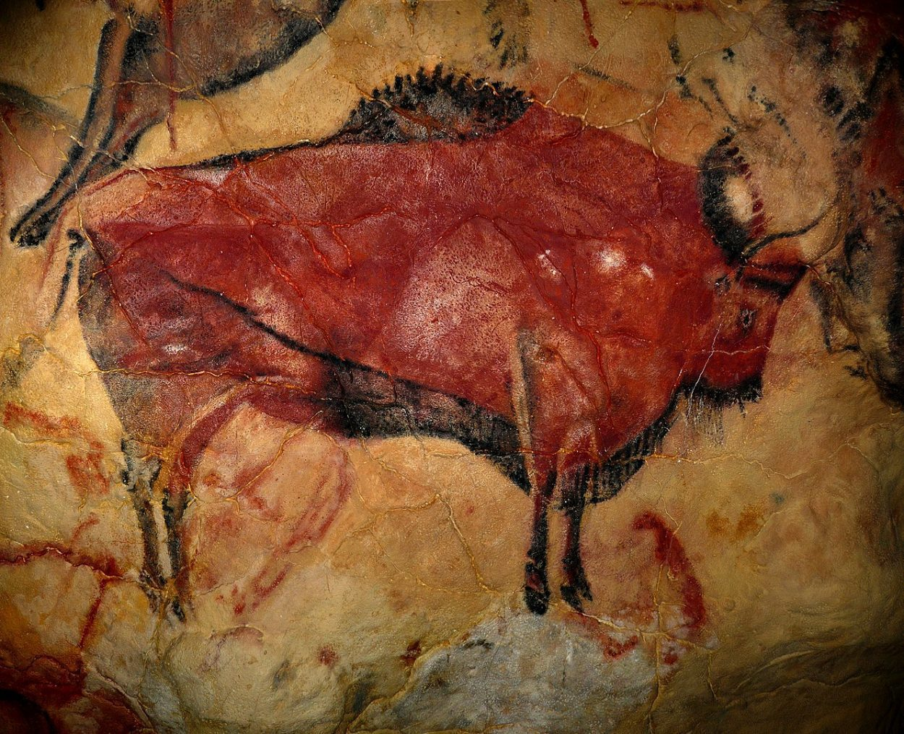

")

چیلنج بہت آسان ہے، مگر آج تک مذہبی حضرات اس چھوٹے سے اور آسان ترین چیلنج کا جواب نہیں دے پائے۔
مسلمان مجبور کہ آدم کو ماڈرن انسان سے تبدیل کر کے 3.4 ملین سال پہلے کا Austrolopithecus بنائیں
نیندرتھال انسان نما، مگر انسانوں سے علیحدہ ایک سپیشیز ہے جو کہ 40 ہزار سال قبل ڈائینوسار کی طرح مکمل طور پر معدوم ہو چکی ہے۔
مسلمانوں ارتقا کو نہیں مانتے۔ چنانچہ جب بالکل انسان نما نیندرتھال کے فوسلز ملے، تو مسلمانوں کا عذر یہ تھا کہ سائنس کو غلطی ہوئی ہے جو انہیں انسانوں سے علیحدہ سپیشیز بتا رہی ہے، بلکہ نیندرتھال بھی انسان ہی تھے۔
اور چونکہ نیندرتھال کی 4.5 لاکھ سال پرانے فوسلز مل چکے ہیں، چنانچہ مسلمانوں نے نیا دعویٰ کیا کہ آدم لاکھوں سال پہلے آئے تھے۔
یہ سلسلہ صرف نیندرتھال تک ہی نہیں رکا، بلکہ سائنسدانوں نے مزید 2 ملین سال پرانے Homo Erectus کے فوسلز برآمد کر لیے، جو پھر سے انسان نما تھے۔ چنانچہ مسلمانوں نے آدم کو 2 ملین سال سے پرانا بتلانا شروع کر دیا۔
مگر یہ سلسلہ صرف Homo Erectus تک ہی نہیں رکا، بلکہ سائنسدانوں نے 3 ملین سال پرانے Homo Habilis اور پھر اس کے بعد 4 ملین سال پرانے Homo Australopithecus کے فوسلز بھی برآمد کر لیے۔ چنانچہ اب مسلمانوں کے نئے دعوے میں آدم 4 ملین سال پرانے ہو گئے۔
مگر سائنس نے پھر مسلمانوں کے دعوے کے غلط ثابت کر دیا، کیونکہ آدم اور نوح وغیرہ سے جو کہانیاں جڑی ہوئی ہیں، وہ کسی طور پر بھی آدم کے لاکھوں سال پہلے آمد کو ثابت نہیں کر رہی ہیں۔

کیا کتوں کا باوا آدم بھی براہ راست آسمان سے نازل ہوا؟
اہل مذہب کا ہتھکنڈہ یہ ہے کہ بحث میں وہ کئی ملینز سال پہلے ہونے والے ارتقا میں "شک و شبہات" کو ڈھونڈ کر اسکا فائدہ اٹھاتے ہیں۔ مثلاً ان کا مطالبہ ہوتا ہے کہ ارتقا کی ہر ہر درمیانی کڑی کا فاسل ریکارڈ پیش کیا جائے گا تب ہی وہ اسے تسلیم کریں گے۔ مگر ایسےکئی ملین سال پرانے ہر ہر کڑی کے تمام فاسلز ریکارڈ کا ملنا ناممکن ہے۔
اہل مذہب کے اس ہتھکنڈے کا حل یہ ہے کہ ان سے "ماضی قریب" میں ہونے والے ارتقا کے متعلق سوال پوچھے جائیں، جہاں یہ شکوک و شبہات کا فائدہ اٹھا کر بھاگنے سے قاصر ہو جائیں گے۔
مثلاً آج کے "Modern Dogs" اہل مذہب کے حلق میں جا کر اٹک گئے کہ جسے یہ نگل سکتے ہیں اور نہ اگل سکتے ہیں۔ اسکی وجہ یہ ہے کہ ماڈرن کتے ابھی Recently ہی grey wolf سے ارتقا پذیر ہوئے ہیں۔ ان Modern Dogs کا قدیم ترین غیر متنازیہ فوسل صرف 14200 ہزار سال پرانا ہے (لنک)۔ جبکہ ماڈرن کتوں کے مقابلے میں wolf اور coyotes کے فاسل ریکارڈ 300،000 سال پرانے تک ملتے ہیں، اور پھر ان کے جدِ اعلیٰ Canis اور پھر Carnivoramorpha کے کئی ملین سال پرانے فوسل ریکارڈ ملتے ہیں۔
سائنس کے مطابق ماڈرن کتوں کےپرانے فاسلز اس لیے نہیں ملتے کیونکہ کتوں کا Recently ہی ارتقا ہونا شروع ہوا تھا۔ سائنسی تحقیق کے مطابق بھیڑئیے کی genetic divergence صرف 20 ہزار تا 40 ہزار سال پہلے ہونا شروع ہوئی تھی (لنک)۔
 جبکہ کتوں کی سب سے پرانی پینٹنگ یا Rock Art صرف 8 ہزار سال پرانی ہے (لنک)۔ تقابل کے لیے سمجھئے کہ سینکڑوں جانوروں کی تصاویر 40 ہزار سال تا 52 ہزار سال پرانی ہیں، جن میں بہت سے ایسے جانور بھی شامل ہیں جو اب نایاب ہیں۔
جبکہ کتوں کی سب سے پرانی پینٹنگ یا Rock Art صرف 8 ہزار سال پرانی ہے (لنک)۔ تقابل کے لیے سمجھئے کہ سینکڑوں جانوروں کی تصاویر 40 ہزار سال تا 52 ہزار سال پرانی ہیں، جن میں بہت سے ایسے جانور بھی شامل ہیں جو اب نایاب ہیں۔
پھر 40 ہزار سال سے لے کر 8 ہزار سال کے درمیان تو بے تحاشہ غاریں ملیں کہ جہاں جانوروں کی پینٹنگز موجود تھیں، مگر ماڈرن کتا ان سب پینٹنگز سے غائب تھا۔
اس کی وجہ یہ ہے کہ کتے کا ارتقا صرف چالیس تا بیس ہزار سال پہلے ہی شروع ہوا۔ ارتقا کے بعد ان کی domestication میں پھر مزید وقت لگا۔ شروع میں یہ صرف کچھ مخصوص علاقوں تک محدود رہے اور ان کی تعداد بہت تھوڑی تھی۔ اسی وجہ سے پہلا غیر متنازعہ فاسل صرف 14 ہزار سال پرانا مل سکا، جبکہ پہلا Rock Art یا پینٹنگ صرف 8 ہزار سال پرانی مل سکی۔
سائنس کے مقابلے میں جب مذہب والوں سے سے سوال کیا جاتا ہے کہ 14200 ہزار سے قبل ماڈرن کتوں کے غیر متنازعہ فاسلز کیوں نہیں ملتے اور وہ یکایک کیسے 14 ہزار سال پہلے وجود میں آ جاتے ہیں، جبکہ بھیڑیے اور انکے جد اعلیٰ canis کے بے تحاشہ فوسلز ملتے ہیں جو کہ کئی ملین سال پرانے تک ہیں۔ اہل مذہب اس پر جواب دینے کی بجائے اپنا منہ بغل میں دے لیتے ہیں۔ ان کے پاس اس سوال کا کوئی جواب نہیں ہوتا۔ زیادہ سے زیادہ ان کی طرف سے یہ بہانہ پیش کیا جاتا ہے کہ ماڈرن کتے کے پرانے فاسلز شاید اس لیے نہیں ملتے کیونکہ فاسلز بننا ایک مشکل عمل ہے اور لازمی نہیں کہ ہر سپیشیز کے پرانے فاسلز مل سکیں۔
تقابل کے لیے سمجھیے کہ مذہب والے ڈیمانڈ کرتے ہیں کہ سائنس انہیں کئی سو ملین سال پرانے فاسلز ان جانوروں کے دکھائیں جو آدھے مچھلی اور آدھے خشکی پر رہنے والے جانور تھے۔ انہیں یہ missing link کا نام دیتے ہیں۔ سائنٹسٹ ان مذہب والوں کو بہت سمجھاتے ہیں کہ لازمی نہیں کہ جو آبی سپیشیز پانی سے نکل کر زمین پر آئی ہوں اور آدھی مچھلی کی طرح دکھائی دیتی ہوں اور گلپھڑے رکھتی ہوں، بلکہ ہو سکتا ہے کہ پانی میں ہی ان کے گلپھڑے پھیپھڑوں میں تبدیل ہو گئے ہوں، مثلاً ڈولفن یا وہیل جن کے گلپھڑے نہیں بلکہ پھیپھڑے ہیں، یا پھر دریائی گھوڑے جو زمین اور خشکی دونوں میں رہتے ہیں۔ دوسرا یہ کہ ہر سپیشیز کے کئی سو ملین سال پرانے فاسلز ملنا ناممکن ہے کیونکہ فاسلز کا بننا ایک بہت مشکل عمل ہے۔ مگر یہاں اہل مذہب سائنس کو معاف کرنے کے لیے تیار نہیں اور انکا مطالبہ پھر بھی جاری ہے کہ سائنس کئی سو ملین سال پرانے فاسلز پیش کرے، جبکہ وہ خود ماڈرن کتے کے صرف 14 ہزار سال سے قدیم فاسلز فراہم کرنے سے معذور ہیں۔
یہی سوال ماڈرن انسان کے فوسلز کے حوالے سے بھی اٹھتا ہے۔ ماڈرن انسان کے فوسلز بھی بہت زیادہ پرانے نہیں ملتے۔ چنانچہ مذہب والوں نے بہانہ بنایاکہ آدم کو کچھ ہزار سال قبل ہی اللہ نے براہ راست آسمان سے نازل کر دیا اس لیے انسان کے پرانے فاسلز نہیں ملتے۔ (سائنس کے مطابق یہ بہانہ غلط ہے کیونکہ ماڈرن انسان کے جد اعلیٰ کے کئی ملینز سال پرانے فاسلز ملتے ہیں)۔
ماڈرن انسان کے مقابلے میں کتوں کا ارتقا تو اور بہت بعد میں ہوا۔ چنانچہ اب کتے جا کر مذہبی حضرات کے گلے میں پھنس گئے۔ وہ اس سوال سے اس وقت تک نہیں نکل سکتے جب تک وہ مان نہ لیں کہ آسمان میں کتوں کے باوا آدم کی پسلی سے کتوں کی اماں حوا پیدا کئی گئی، جس نے کتوں کے باوا آدم کو بہکایا اور اس کے نتیجے میں کتوں کا باوا آدم بھی براہ راست 14 ہزار سال پہلے زمین پر نازل ہو کر کتوں کی اماں حوا کی اولاد سے انسیسٹ پر لگ گیا، اور آج تک کتوں میں یہ انسیسٹ جاری ہے۔

اوپر تصویر میں دائیں طرف بیل/گائے ہے، اور بائیں طرف اس کا موازنہ بیل/گائے کے اجداد Aurochs سے کیا گیا ہے، جو کہ بالکل جنگلی نسل تھی، اور قد و قامت میں یہ آج کے بیل/گائے سے ڈیڑھ گنا زیادہ بڑا تھا۔
سائنسی تحقیق کے مطابق:
-
بیل/گائے کا ارتقاء (لنک) صرف 10500 سال پہلے ہی جنگلی نسل Aurochs سے ہونا شروع ہوا۔
-
بیل/گائے کے 8 ہزار سال سے پرانے کوئی فوسلز نہیں ملتے ہیں۔
- جبکہ Aurochs کے 2 لاکھ سال پرانے فاسلز تک ملتے ہیں۔
- اور سب سے آخری Aurochs سن 1627 میں یورپ میں فوت ہوا۔ لنک
دوسرا سوال: گائے/بیل کے 8 ہزار سال سے پرانی کوئی Cave Painting کیوں نہیں ملتی؟
دنیا کے مختلف حصوں میں Cave Paintings ملتی ہیں جو کہ ہزاروں سال تک پرانی ہیں۔ ان میں ہزاروں کی تعداد میں جانوروں کی تصاویر بھی شامل ہیں۔
مثلاً Aurochs کی یہ تصویر دیکھئے جو کہ Altamira Cave Spain میں موجود ہے اور 36 ہزار سال پرانی ہے۔
ایک یہ ہی نہیں، بلکہ Aurochs کی بے تحاشہ تصاویر ہیں جو کہ دنیا کے مختلف علاقوں کی غاروں میں موجود ہیں۔
مگر حیرت کی بات یہ ہے کہ گائے/بیل کی ایک بھی ایسی Cave Painting موجود نہیں ہے ۔
کیوں؟
سائنس اس کا جواب “ارتقا” کی صورت میں دے رہی ہے۔ سائنسدانوں نے فاسلز اور ڈی این اے/جینز کی سٹڈی کے بعد یہ نتائج اخذ کیے ہین کہ بیل/گائے کا ارتقا انڈین Aurochs سے تقریباً 10 ہزار سال قبل ہی وقوع پذیر ہونا شروع ہوا، اور اسی لیے بیل/گائے کے نہ تو 8 ہزار سال قبل کے فاسلز ملتے ہیں، اور نہ ہی کوئی cave paintings۔
ارتقا کے مخالفین کا دعویٰ: فاسلز نہ ملنا اس کا ثبوت نہیں کہ فاسلز تھے ہی نہیں
جواب:
وہ فوسلز ملنا مشکل ہوتے ہیں جو کہ ملین سالوں پرانے ہوتے ہیں۔ لیکن 8 ہزار سال بہت قریب کا عرصہ ہے جہاں فوسلز ضائع ہونے کے چانسز بہت کم ہیں۔
مثال کے طور پر انسانی آبادیوں کے فوسلز 2 لاکھ سال پرانے تک ملے ہیں۔ چنانچہ سوال یہ اٹھ کھڑا ہو گا کہ اگر انسانوں کے فوسلز مل رہے ہیں، تو پھر گائے/بیل کے فوسلز ساتھ کیوں نہیں مل رہے، کیونکہ انسانی آبادیوں میں انسان اور مویشی ساتھ ساتھ رہتے تھے۔
بلکہ ارتقا کا انکار کرنے والے حضرات تو انسان سے قبل کے نیندرتھال، اور homo erectus اور homo habilis ان سب کے فوسلز کے متعلق دعویٰ کرتے ہیں کہ ان میں کوئی ارتقاء نہیں ہوا، اور 3.5 ملین سال پرانے یہ سارے فوسلز ماڈرن انسان کے ہی ہیں، جو سب کے سب آدم کی اولاد تھے۔
چنانچہ ارتقا کے مخالفین کے لیے سوال پھر یہ اٹھ کھڑا ہو گا کہ جب انسانوں کے 3.5 ملین سال پرانے فاسلز مل رہے ہیں، تو پھر بیل/گائے کے صرف 8 ہزار سال پرانے فوسلز موجود کیوں موجود نہیں، جبکہ انسان اور بیل/گائے ایک ہی آبادی کا حصہ ہوتے تھے؟
پھر غاروں میں بنی تصاویر کو دیکھ لیجئے کہ جہاں انسانوں کی جانوروں کے ساتھ تصاویر کا ایک انبار لگا ہوا ہے۔ مگر کوئی ایک بھی غار میں بنی تصویر میں کوئی بیل/گائے نظر نہیں آتی ہے۔کیوں؟
بیل گائے کے مقابلے میں Aurochs کی تصاویر بے تحاشہ غاروں میں ملتی ہیں، اور ان Aurochs کے لاکھوں سال پرانے فاسلز بھی ملتے ہیں، مگر بیل/گائے ہر جگہ سے غائب ہیں۔ کیوں؟
سائنس ان تمام سوالوں کا مکمل جواب ارتقا کی صورت میں دے رہی ہے، مگر ارتقا کے مخالفین لاجواب ہو کر اپنی گردنوں کو اپنی بغلوں میں چھپائے ہوئے ہیں۔